Portfolio · Stage été 2026
Génie électrique
Robotique & Électronique
Génie électrique · Robotique · Électronique · CAO · Programmation
Recherche de stage — été 2026
Terrain : conception → intégration → validation
Mentalité équipe : construire, déboguer, documenter
À propos
Étudiante en génie électrique à l’Université Concordia, orientée vers les systèmes embarqués, la robotique et l’électronique de puissance. Je conçois et valide des prototypes via schémas et simulations, intégration et câblage, puis tests itératifs. Je documente les décisions de conception afin que les systèmes soient reproductibles et faciles à dépanner.
Compétences
Programmation
C
C++
Python
VHDL
Systèmes embarqués
Arduino
ROS2
Interfaçage de capteurs
Commande en boucle fermée (PID)
Drivers moteurs
Matériel & conception
Conception PCB
LTspice
Fusion 360
FPGA & simulation
Vivado
ModelSim
Outils
GitHub
Linux
MATLAB
Visual Studio
Projets
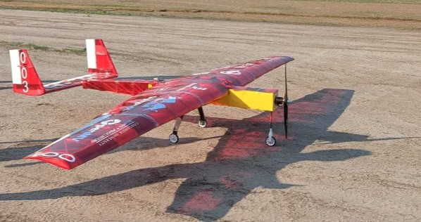
SAE Aero Design – Systèmes électriques
Travail sur les systèmes électriques d’un avion RC de compétition : distribution d’alimentation, faisceaux/câblage,
intégration et dépannage pendant l’assemblage et les essais en vol.
- Architecture électrique : distribution d’alimentation et approche de câblage/faisceaux
- Assemblage et intégration : connectique, routage, tests de continuité, mise en service des sous-systèmes
- Support débogage : isolement de pannes (courts-circuits, connexions intermittentes) durant le prototypage
- Support essais en vol : analyse des observations/télémétrie et propositions d’ajustements d’intégration
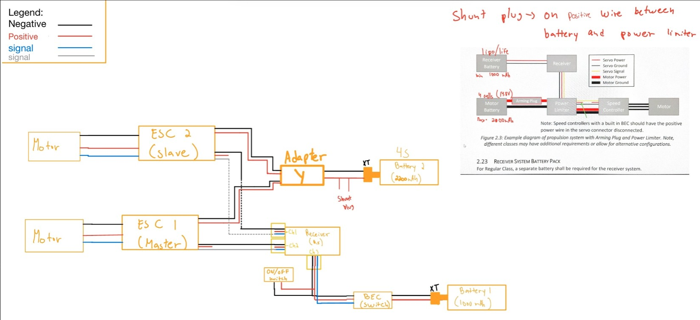
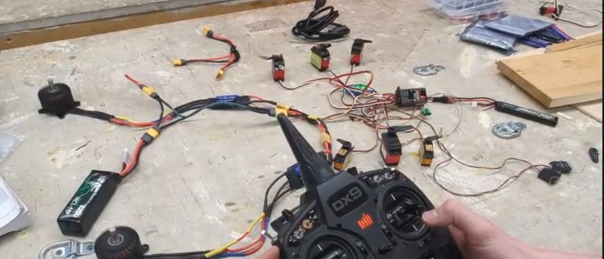
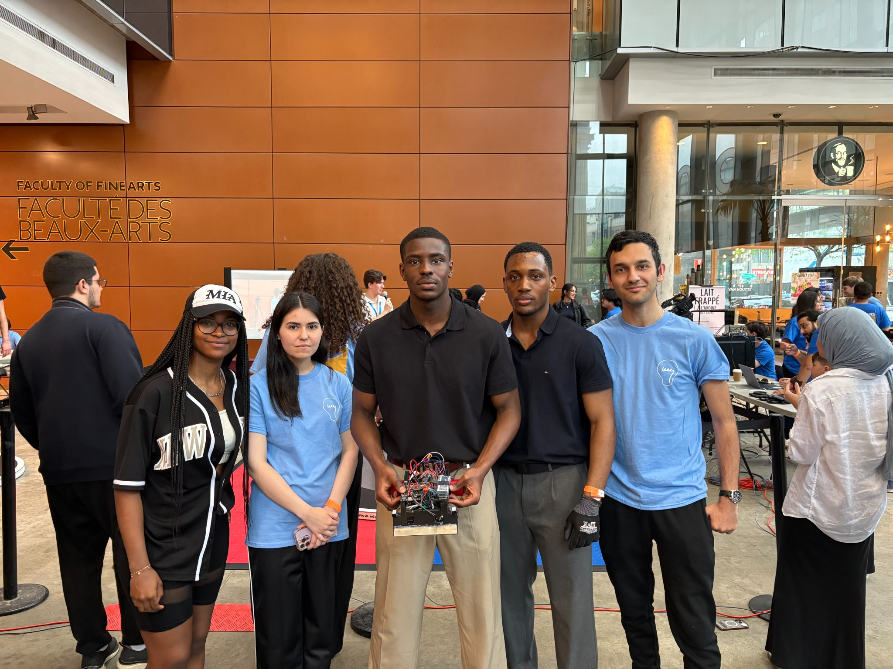
Compétition Robowars – Robot autonome
Robot autonome basé sur Arduino, conçu pour réagir en temps réel grâce au retour capteurs et à l’actionnement des moteurs.
- Logique de contrôle : lecture capteurs → décision → boucle d’actionnement sur Arduino Nano
- Intégration capteurs + driver moteur ; réglages pour une réponse stable en temps réel
- Amélioration de la robustesse : montage, soulagement de traction du câblage, itérations
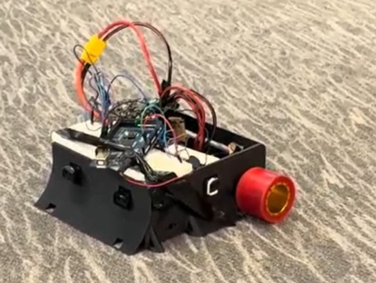
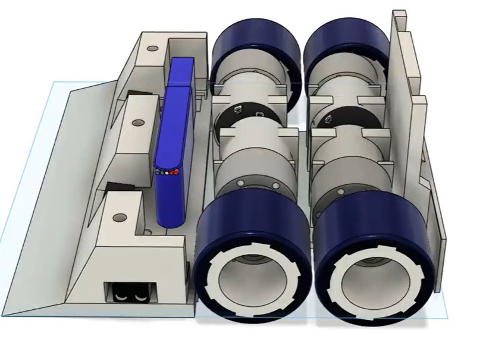
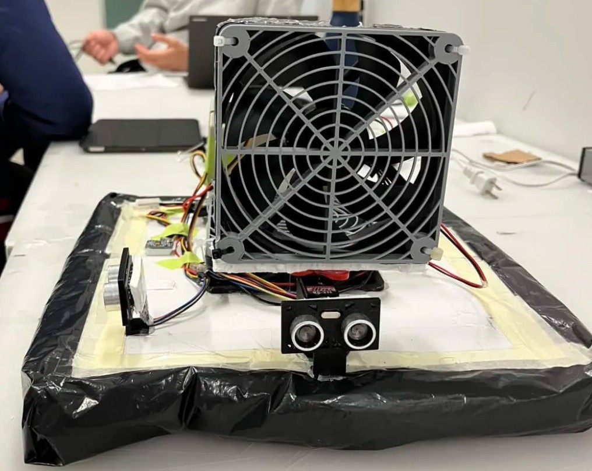
Aéroglisseur autonome – Prototype & CAO
Prototype d’aéroglisseur autonome axé sur l’intégration CAO→fabrication, la mise en route électronique et des essais itératifs pour navigation en labyrinthe.
- CAO Fusion 360 pour un design manufacturable et un packaging stable
- Intégration et mise en route : câblage, vérification capteurs, tests incrémentaux
- Itération du comportement de navigation selon les résultats d’essais (réglages et débogage)
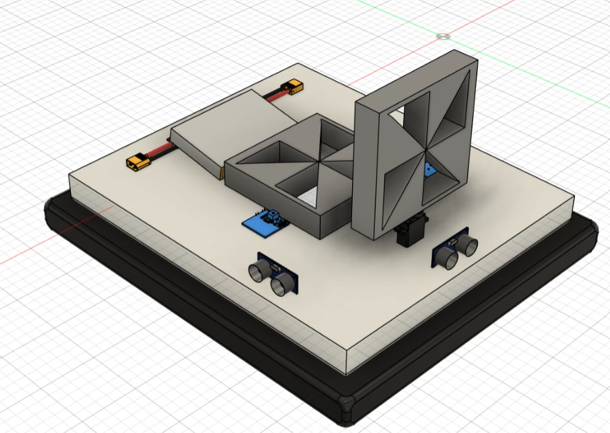
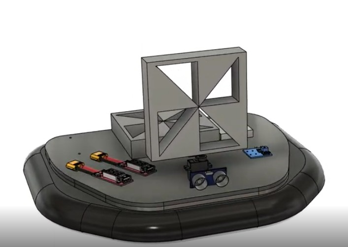
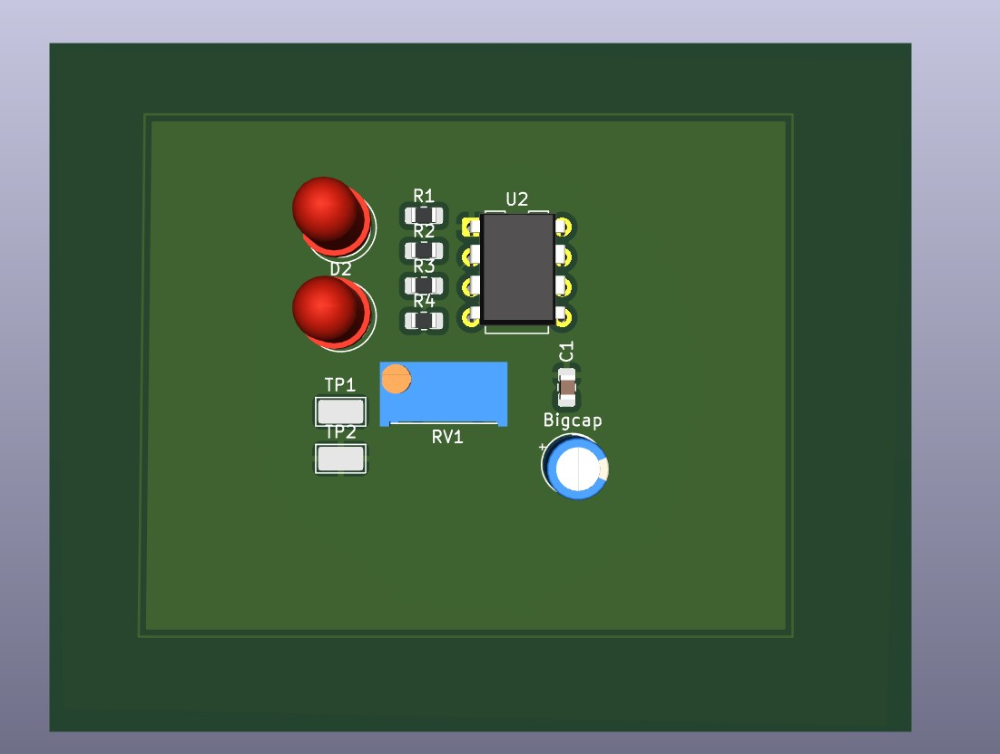
PCB clignoteur double LED (NE555, vitesse variable)
Conception et fabrication d’un PCB d’oscillateur astable NE555 pour faire clignoter deux LED avec vitesse réglable.
La fréquence est définie par un réseau RC, et un potentiomètre permet un ajustement en temps réel. Validation au scope
et documentation du schéma et des choix de conception.
- Implémentation du NE555 en mode astable pour générer un signal carré continu (clignotement/alternance)
- Réseau RC pour définir la fréquence + potentiomètre pour ajustement du rythme à la volée
- Validation des formes d’onde et du timing à l’oscilloscope ; documentation du schéma, hypothèses et résultats
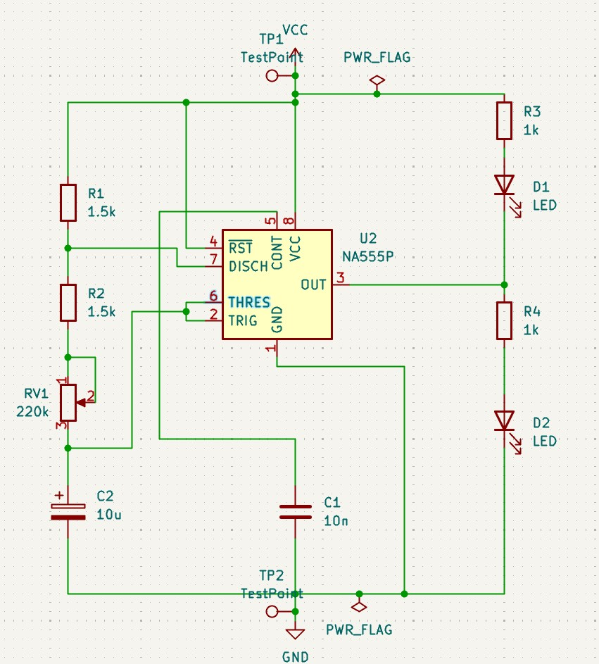
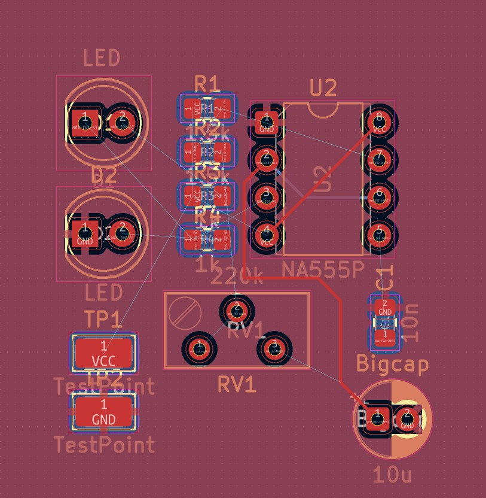

Bras robotisé d’échecs sous ROS2 (prévu / en cours)
Projet robotique visant à développer une pile de contrôle ROS2 pour un bras robotisé, afin d’exécuter des coups d’échecs de manière fiable et sécuritaire.
- Objectif : nœuds ROS2 en Python pour gestion des commandes et retours d’état
- Objectif : pipeline d’exécution de mouvement (cinématique + génération de trajectoires)
- Objectif : contraintes de sécurité (limites articulaires, zone de travail) + documentation
PCB convertisseur abaisseur (BEC) (prévu / en cours)
Projet d’électronique de puissance visant à concevoir un PCB de convertisseur buck pour obtenir un rail d’alimentation stable pour l’électronique RC/aéronef.
- Objectif : architecture et sélection des composants (contrôleur, inductance, protections)
- Objectif : schéma + BOM ; validation LTspice (stabilité, réponse transitoire)
- Objectif : fondamentaux de routage PCB (masse, découplage, boucles à fort di/dt)
Contact
Email : cassandra.cpn221@gmail.com
LinkedIn : https://www.linkedin.com/in/cassandra-philog%C3%A8ne-506678314/
GitHub : https://github.com/cassEngine/
Ouverte aux opportunités de stage — été et hiver 2026.
LinkedIn : https://www.linkedin.com/in/cassandra-philog%C3%A8ne-506678314/
GitHub : https://github.com/cassEngine/
Ouverte aux opportunités de stage — été et hiver 2026.